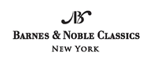

Published by Barnes & Noble Books
122 Fifth Avenue
New York, NY 10011
Pride and Prejudice was first published in 1813.
Originally published in mass market paperback format in 2003 by Barnes &
Noble Classics with new Introduction, Notes, Biography, Chronology,
Inspired By, Comments & Questions, and For Further Reading.
Trade paperback edition published in 2004.
Introduction, Notes, and For Further Reading
Copyright © 2003 by Carol Howard.
Note on Jane Austen, The World of Jane Austen and Pride and Prejudice,
Inspired by Pride and Prejudice, and Comments & Questions
Copyright © 2003 by Barnes & Noble, Inc.
All rights reserved. No part of this publication may be reproduced or transmitted in any form or by any means, electronic or mechanical, including photocopy, recording, or any information storage and retrieval system, without the prior written permission of the publisher.
Barnes & Noble Classics and the Barnes & Noble Classics
colophon are trademarks of Barnes & Noble, Inc.
Pride and Prejudice
ISBN-13: 978-1-59308-201-7 ISBN-10: 1-59308-201-0
eISBN : 978-1-411-43296-3
LC Control Number 2004100759
Produced and published in conjunction with:
Fine Creative Media, Inc.
322 Eighth Avenue
New York, NY 10001
Michael J. Fine, President and Publisher
Printed in the United States of America